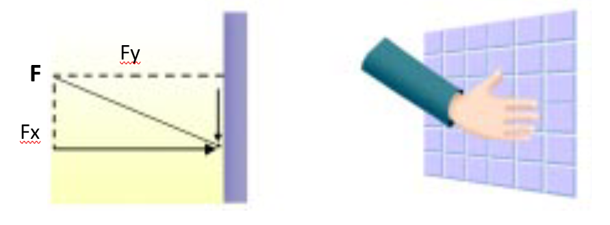

Hidrodinâmica
A Hidrodinâmica é a ciência que estuda o movimento da água. Nessa disciplina, analisa-se como as partículas de fluido se movem e
interagem entre si e com o meio. Durante a aula, serão vistos temas importantes r
elacionados à Hidrodinâmica e sua aplicação na Hidráulica Agrícola, incluindo classificações de movimentos
de fluidos, regimes de escoamento, a transmissão de continuidade e o teorema de Bernoulli. O estudo do
movimento dos fluidos também permite analisar os efeitos das forças sobre eles (dinâmica).
Lembre-se, fluidos são considerados como um meio contínuo composto por partículas fluidas que interagem
entre si e com o meio.
Classificação dos movimentos
Um campo de velocidade depende do espaço e do tempo, e
os fluxos representados por um campo de velocidade também exibem comportamento
espaço-temporal. De acordo com a dependência temporal, os fluxos podem ser estacionários ou instáveis.
Movimento Permanente
Um fluxo permanente é aquele cujas características (força, velocidade e pressão) são uma função apenas do ponto e são independentes do tempo. Com movimento constante, a taxa de fluxo é constante em um ponto no fluxo
O movimento permanente é aquele em que as características, como força, velocidade e pressão, são exclusivamente determinadas pelo ponto e não dependem do tempo. Nesse tipo de movimento, a vazão é constante em um ponto específico da corrente. Ele pode ser classificado como:
Movimento uniforme que:
O movimento uniforme ocorre quando a velocidade média é mantida constante ao longo da corrente. Nessa situação, as seções transversais da corrente são iguais. Alguns exemplos de escoamento uniforme podem ser encontrados em condutos retos com diâmetro constante, como adutoras e canais prismáticos, onde a altura da lâmina de água é constante.
Movimento varidado: O escoamento variado ocorre quando a velocidade média não é constante ao longo da corrente e varia de acordo com o escoamento. Exemplos de escoamento variado podem ser encontrados em condutos com diâmetros variáveis ou canais com inclinações diferentes. Esse tipo de movimento pode ser acelerado ou retardado. Um escoamento é considerado acelerado quando a velocidade aumenta no sentido do escoamento, o que resulta em uma aceleração positiva nessa direção. Isso geralmente ocorre em regiões onde a área da seção transversal diminui. Por outro lado, um escoamento é considerado retardado quando a velocidade diminui no sentido do escoamento, o que resulta em uma aceleração negativa. Isso geralmente ocorre em regiões onde a área da seção transversal aumenta.
Outro tipo de movimento é o não permanente ou transitório, no qual as características do movimento variam tanto de ponto para ponto quanto de instante para instante. Esse tipo de escoamento pode ser dividido em duas categorias: os escoamentos transitórios com variação lenta e os escoamentos transitórios com variação rápida. Quando a variação é lenta, como no escoamento em uma tubulação abastecida por um reservatório de nível variável, a mudança é lenta e a compressibilidade do líquido não é importante. Por outro lado, quando a mudança é brusca, como nos casos de fechamento rápido de válvulas em condutos forçados, ondas de pressão são geradas e transmitidas com a velocidade de propagação do som, o que causa uma variação acentuada de pressão. Nesses casos, a compressibilidade é um fator importante no fenômeno conhecido como transiente hidráulico ou golpe de aríete.

Esquema representativo da definiçao de pressão.
Quando você exerce, com a palma da mão, uma força sobre uma superfície (uma parede, por exemplo), dizemos que você está exercendo uma pressão sobre a parede. Na figura anterior, a força (F) é aplicada em um determinado ponto da superfície e sua componente normal (Fx) atua realizando pressão. Observe, porém, que na realidade, a força aplicada pela mão distribui-se sobre uma área, exercendo a pressão. Definimos então pressão como sendo a razão entre a força normal e a área da superfície considerada. Sendo a pressão expressa por: $$P = \frac{F}{A}$$ Em que, suas unidades serão expressas pela razão entre as unidades de força e as unidades de área nos sistemas:Unidades de pressão
As principais unidades de pressão e suas equivalências são:
10330 kgf m$^{-2}$ = 1,033 kgf cm$^{-2}$ = 10,33 m.c.a. = 101325 Pa = 101,325 kPa = 760 mmHg = 1,013 bar = 14,7 psi = 1 atm